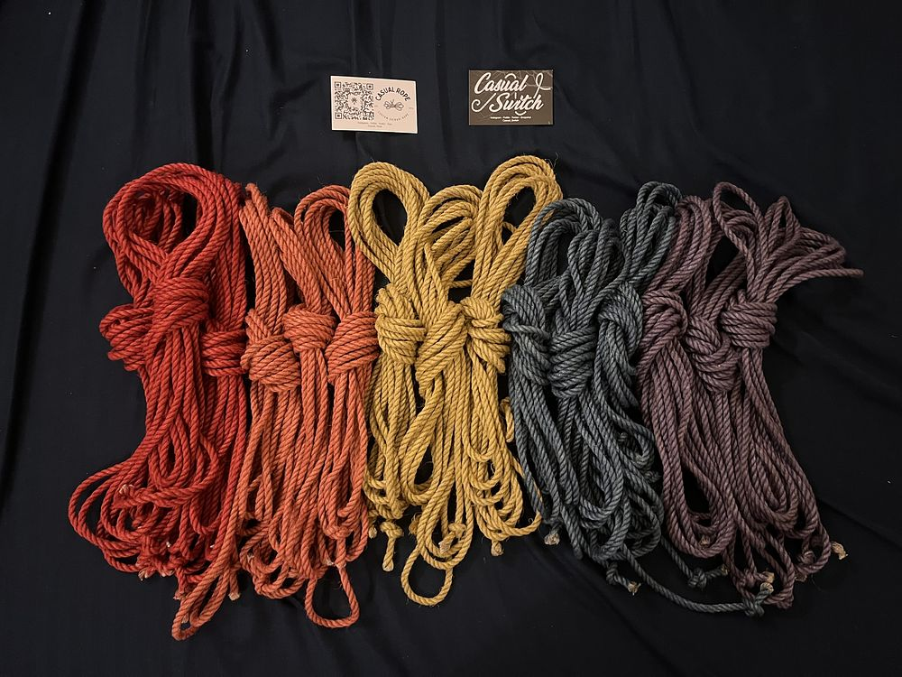

FAQ
When did you start?
I started tying in October 2023, after going to Ropes in Space (a local peer-learning ropes group). Before that, I’d been a rope bottom a few times with a play partner, so knew I really liked being tied, but wasn’t sure I’d be any good at tying. I really liked it and decided to try to learn more. I started improvising ties and posting them to FetLife in January 2024.
What resources do you use to learn?
I tend to prefer photos to videos, so I like The Duchy’s tutorials, and also enjoyed the book Essence of Shibari, but I’ve recently started watching Shibari Study’s videos and love them. I like to use tutorials to learn the basics of a new kind of tie, then tie it several times from memory, and then start to get creative with it.
I’m still learning a lot, so I’m not an appropriate source of ropes education, especially about things like safety and suspension. I’d recommend taking in-person classes from experienced mentors if you want to get started on anything more than decorative ties.
What kind of ropes do you use?
As of August 2024, I have new rainbow ropes from Casual Rope that are 8m/6mm linen. I really like them. They’ve written a useful explainer about linen ropes.

Most of my older ties are with 6mm jute, each 8 meters long. I got them on Etsy from someone I subsequently found out is problematic, so I’m hoping to learn to treat and dye my own ropes now.
Are these really self-ties?
If it’s tagged self-tie, I tied myself :) For those expressing disbelief, I’m pretty flexible, have good spatial awareness to do knots behind my back, and also use some tricks to start frictions at a more accessible place and move them to the back.
How long does it take?
The more intricate corset ties usually take about an hour or two the first time if I’m improvising (and have to untie a bit when I change my mind about something), and 30-45 minutes if I’m tying them once I know what I’m doing.
I have an 11-minute video of tying a corset base at my typical speed.
Can I copy your ties?
Of course! I love if you @ me in the caption of anything you post that’s inspired by my ties (I won’t accept tags in photos unless I’m directly involved like the model or rigger, though).
I’m not sure what legal weight it holds, but I intend to share any of my own designs and images where I am the only rigger, model and photographer on a CC-BY-SA-NC license, which means you can use and remix them as long as you give me credit (BY), share resulting works under the same license (SA), and don’t use them for commercial purposes (NC).
Can you link to the tutorials for your ties?
Most of the ties I post are improvised, so sometimes I’m not even sure how I did them by the end. If I’m tying from someone else’s tutorial or inspired by a picture, I’ll always link to it (let me know if I’m ever not giving appropriate credit).
Do you teach workshops?
I don’t have any immediate plans to do online workshops, but I’d be up for teaching in-person workshops on self-tying corsets. DM me to enquire. If we get enough people signed up, I’ll be teaching a weekend workshop with Captured Erotica hosted by TeVincula March 28-30, 2025 (details here).
Where did you get those cute panties?
The watermelon and sun/moon pants are from a UK Etsy seller called SproutOrganic.
The rainbow and purple/green swirl pants are from an Etsy seller who isn’t online anymore.
Do you edit your photos?
Sometimes I’ll edit out parts of the background in my messy room, and I’ll often adjust the colour profile of an image to make the ropes stand out more. If I edit any more than that, I will disclose it in the caption. But I will never edit the shape of my body or the ropes themselves.
Will you tie me?
Probably not, as I’m too busy to tie regularly with existing partners. But I’m usually at Ropes in Space, so come by and say hi if you’re in Glasgow. It’s always nice to meet in a friendly public space to check the vibes first, anyways.